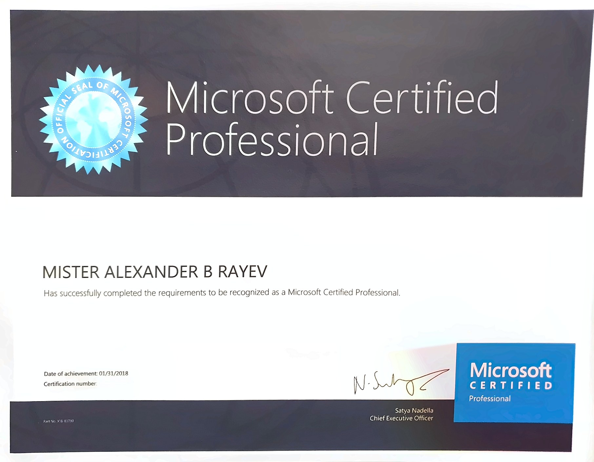

Adaptive ML Kube: Universal Deployment Platform
One platform, two worlds: in-house AWS EKS and customer on-premises clusters installed with a single command.
GoKubernetesHelmKustomizeCrossplane
Read the case study →Visit the live product →Principal Software Engineer · Cloud, Kubernetes and AI platform architect
Hands-on full-stack software architect specialising in developer-first cloud platforms and large-scale distributed systems: the APIs, CI/CD pipelines, observability and infrastructure that let engineering teams ship and scale. End-to-end ownership across architecture, implementation, deployment and continuous improvement. Details are generalised; diagrams are simplified and illustrative. All information provided here is public.
Case studies from my recent work. Details are generalised; diagrams are simplified and illustrative.
One platform, two worlds: in-house AWS EKS and customer on-premises clusters installed with a single command.
Auto-scales from 1 to 20 workers; 45 ms audio processing, sub-100 ms APIs, 60–85% lower cost.
Multi-AZ AWS stack deployed entirely as code with the AWS CDK in TypeScript.
Each agent owns a phase, from requirements to deployment planning, and produces traceable artifacts.
From one monolithic app to reusable libraries, with better UX and a faster, more responsive interface.
Live tuning of capacitive-sensing designs on real hardware, with a Qt 6 QML front-end over a C++ core.
A zero-dependency .NET MVVM desktop app with a built-in telemetry simulator that runs without hardware.
Inherited training pipeline fixed: 130 to 34 GB peak memory in data preparation and 50% faster GPU model training, with no loss in model quality.
A process blending Kaizen, Agile and RUP, plus an automated daily pipeline that publishes quality and progress dashboards.
A cross-platform laser lithotripsy system that shortened procedures from sixty to forty minutes, and a client for remote doctor consultations.
What I work with day to day.
Python, C++, C#, Java, TypeScript, JavaScript, Go
TensorFlow and Keras, PyTorch, TFLite int8 quantization (PTQ and QAT), Kubeflow, MLflow, LLM agents and Model Context Protocol, GPU (CUDA) profiling and optimisation
AWS (CDK, CloudFront, ECS Fargate, EKS, RDS, Cognito), Kubernetes, Helm, Kustomize, Crossplane, Argo Workflows, Istio, Docker, Linux
Angular, RxJS, React, Node.js, Spring, Qt 6 and QML, .NET WPF (MVVM), LabVIEW
CAPSENSE capacitive sensing, ModusToolbox, UART and I2C links, PMBus digital power controllers, desktop configuration and tuning tools
PostgreSQL, PostgREST, Microsoft SQL Server, Dask, Parquet, Prometheus, Grafana
Distributed systems, REST APIs, CI/CD, architecture, code reviews, performance profiling and optimisation
Software for medical devices (laser lithotripsy, remote consultation) and semiconductor products (sensing and power-controller tools): design and code reviews, traceable artifacts, automated testing, static analysis, coverage tracking

Engineering practices I put in place.
More than a decade building distributed and cloud products.
2022 – present · Andover, MA
2018 – 2022 · Hopkinton, MA
2017 – 2018 · Southborough, MA
2014 – 2017 · Westborough, MA
2012 – 2014 · Needham, MA
Open to conversations about principal and architect roles in cloud platforms, distributed systems and edge AI.